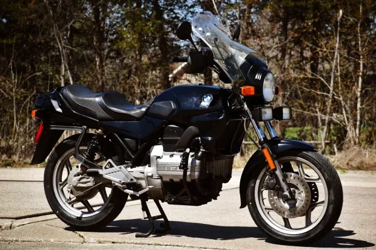
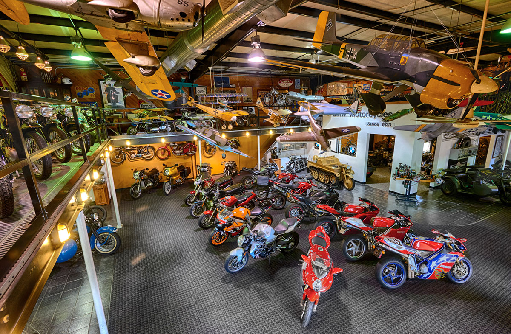

How I Got the Bike

I spotted this bike in a Facebook Marketplace ad from a guy named John up at Blue Moon Cycle, an incredible place to visit for vintage motorcycles, mostly BMW but with plenty else to see. John's been in the Atlanta area a long time now, and he's got the stories to prove it. Anyway, this K75 caught my eye, though I've had a crush on these bikes for ages. I'm an old soul at heart, and I love things that have a good chance of breaking on me.
Kidding aside (mostly), the K75 is known as the "flying brick," partly for the look of the engine, partly for the durability. These are known to clear 500,000 miles (check out FortNine's video on the subject). I love the styling; they sit right between modern and old-school, caught somewhere between the oilheads and the airheads that came before. They remind me a bit of myself, a kid born in the internet age, right on the line between Millennial and Gen Z.

Enough romance. John and I agreed on a price. I rode up there on my 1991 Honda Nighthawk 750 (I've been riding her since 2018) and set my eyes on the beaut. She hadn't run since 2020, and the license-plate sticker made that clear. One previous owner, Chuck, who bought her new in 1986 in Wisconsin, at a Harley-Davidson shop, no less.
Needless to say, I was in love. I paid John and told him I'd be back in the morning to pick her up. Now, I did mention I like things that can break on you. I've got a 1997 Chevy C1500 I use for odd jobs, and this was one of them. She runs well enough for the most part. Still fighting some electrical demons to this day. I called my nearest U-Haul and rented a trailer. I was sweating when the guy asked me to flash my blinkers; they didn't work, but he sent me on my way anyway.
The ride over to Blue Moon Cycle was uneventful, and I loaded up "Ines" (apparently she had a name) and brought her home.
We'll do a deep dive into the repairs in another post.